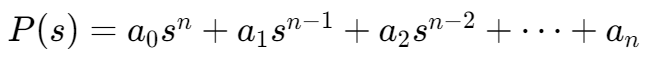
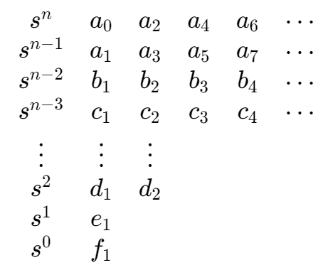

稳定性,,
临界稳定,,
特征方程在虚轴（jω轴）上有简单根，且其他根都在左半平面，则这个系统处于临界稳定状态。
Routh stability criterion
取传递函数的分母为特征多项式：

构造 Routh 数组：

笔记
- 没有符号变化：所有根都具有负实部，系统是稳定的。
- 符号变化 k 次：存在 k 个具有正实部的根，系统是不稳定的。
- 特殊情况：如果第一列中出现零
- 第一列为零，但该行的其他元素非零：
- 需要用一个小正值 ϵ 替换零来完成分析。
- 第一列为零，并且该行的其他元素也为零：
- 使用上一行（即零行的上一行）对应的特征多项式，求它对 s 的导数。
- 用求得导数的系数代替全零行，继续计算 Routh 数组。